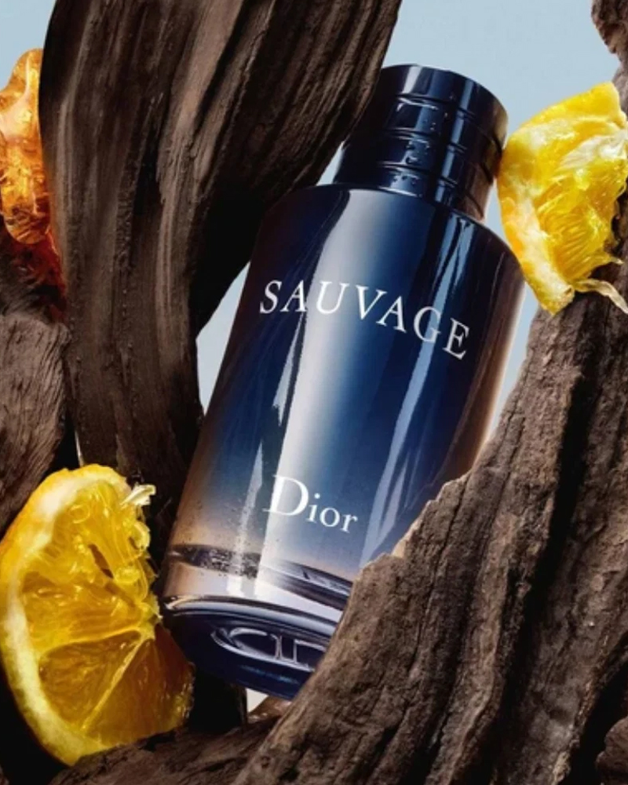

N.º 01

Coloca aquí la imagen
images/dior-sauvage-edt.jpg
800 × 1000 px sugerido
Dior
Sauvage EDT
Aromática especiada
El punto de partida del fougère moderno: bergamota de Calabria luminosa sobre una base mineral de ambroxán. Fresca, directa y reconocible desde la primera aplicación.
Salida bergamota, pimienta · Corazón pimienta de Sichuan, lavanda, geranio · Fondo ambroxán, cedro, labdanum